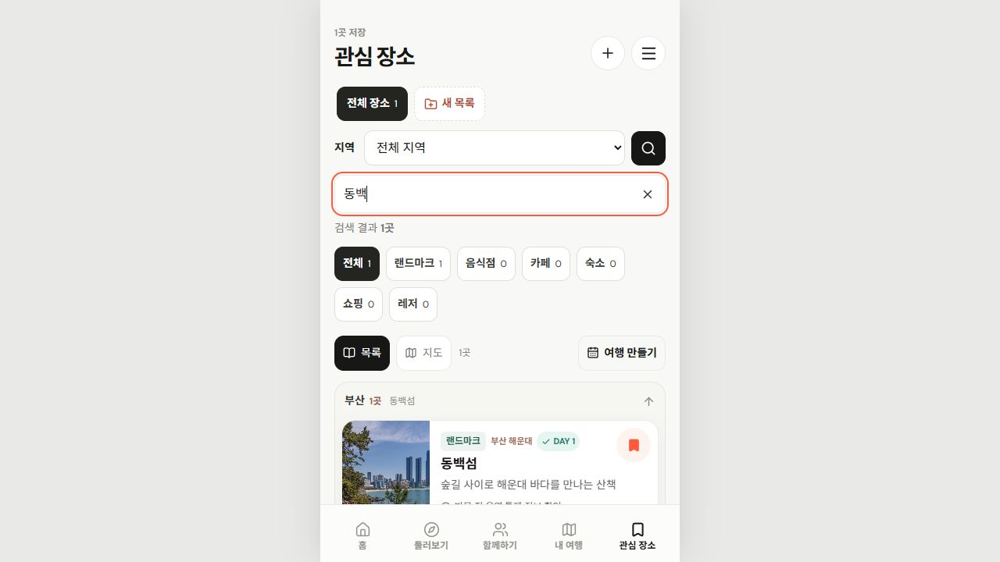
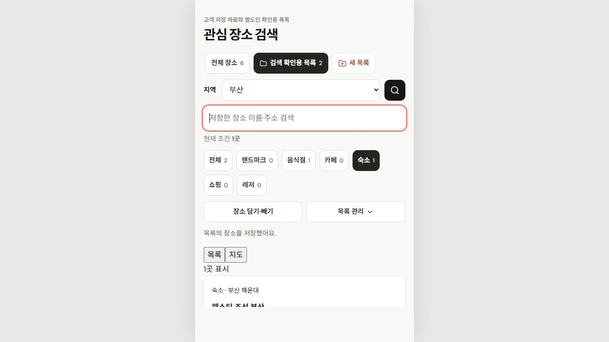
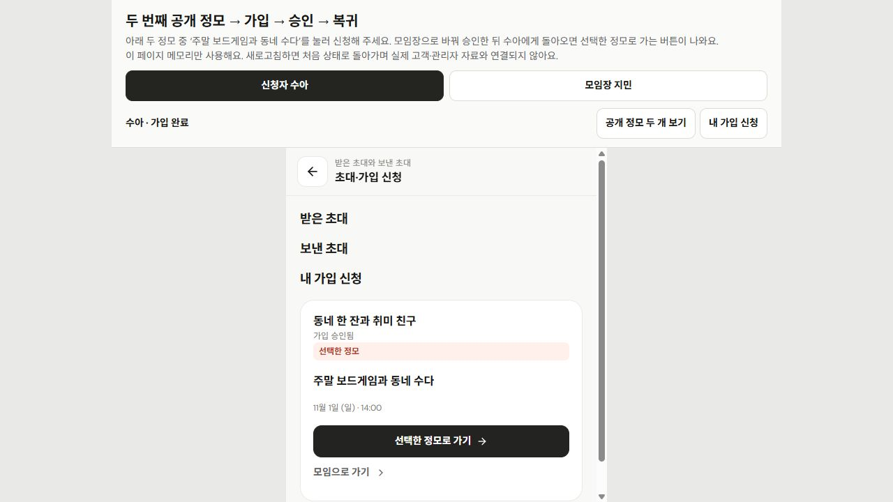
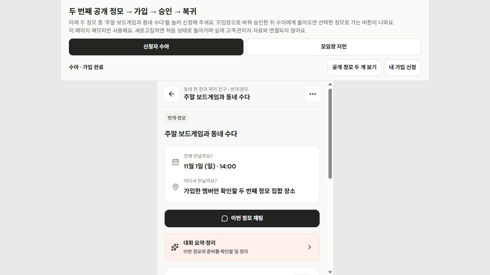
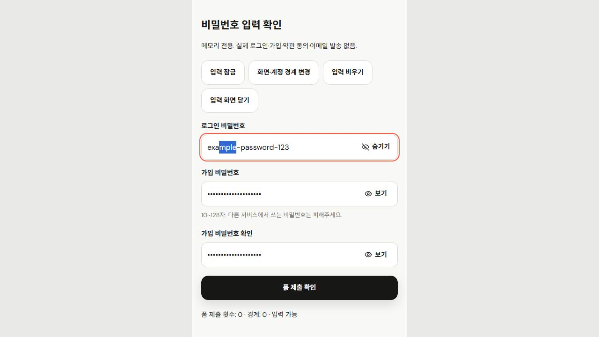

SPOTLOG · 2026-10-29 후속 개선
검색하고, 원래 정모로 돌아가고,
비밀번호를 확인하기
세 가지 기능 로컬 반영전체 UI 검수에서 제안한 1~3번 구현. 기존 저장 자료·개인 여행·모임 권한 유지. Git 업로드·배포 없음.
01 · 관심 장소 이름·주소 검색
관심 장소 → 지역 오른쪽 돋보기 → 이름이나 주소 입력. 현재 목록·지역·종류 안에서 결과를 바로 표시. 목록과 지도에 같은 조건 적용.
- 접이 입력 16px, 검색·지우기 조작 44px. 기본 화면에는 작은 검색 버튼만 표시.
- 이름·주소·지역의 단어를 함께 검색. 예: ‘바다 달맞이길’. 영문 대소문자와 Unicode 표기 차이 정규화.
- ‘검색 지우기’는 검색어만 제거. 목록·지역·종류는 그대로 유지. 결과 수와 0건 안내 제공.
- 검색창을 접어도 현재 검색 유지. 검색어는 화면 안의 임시 조건이며 화면 재진입·계정 변경 시 초기화. 검색만으로 장소·목록·여행 초안을 저장·변경하지 않음.




02 · 선택한 공개 정모로 복귀
모임 찾기 → 번개·정모 카드 → 모임 가입 신청 → 운영진 승인 → ‘선택한 정모로 가기’. 처음 골랐던 정모의 이름·날짜를 기억해 다시 찾는 과정 축소.
- 가입 전에는 모임 소개와 운영자가 공개한 정모 정보만 표시. 내부 집합 장소·대화·참석자·개인 동선은 공개하지 않음.
- 신청 대기와 승인 후에도 원래 선택한 정모 표시. 다른 정모로 신청을 몰래 바꾸거나 자동 참가시키지 않음.
- 복귀할 때 공개 선정·모집 상태·날짜·취소·완료·회원 권한을 다시 확인. 공개가 철회되거나 날짜가 달라졌다면 안내 후 모임에서 재확인.
- 기존 탐색 조건과 뒤로가기 흐름 유지. 선택 목적지는 공개 식별자·날짜만 추가 저장.
가입 승인 ≠ 정모 참석 확정. 가입한 뒤 해당 정모에서 참가·미정·불참을 직접 선택. 회원 가입만으로 참석 인원이나 예약을 바꾸지 않음.




백엔드 전달 사항 · 기존 자료 호환
신청 DTO의 publicActivityIntent는 선택 항목. groupId / activityId / date만 허용. 이 항목이 없는 기존 version 1 신청 자료도 그대로 읽기. 공개 정보·현재 권한을 서버에서도 재검사해야 하며, 승인 처리와 RSVP 처리는 별도 유지. 현재 실제 다중 사용자 서버 전달은 연결 전.
03 · 비밀번호 보기·숨기기
이메일 로그인 비밀번호 / 이메일 가입 비밀번호 / 가입 비밀번호 확인 3개 입력에 적용. 각 입력의 ‘보기’를 누르면 그 칸만 표시, ‘숨기기’를 누르면 다시 가림.
- 입력값·자동완성·커서 선택을 유지하며 보기 상태만 변경. 보기 버튼으로 폼을 제출하지 않음.
- 처리 중 입력 잠금, 화면·계정 경계 변경, 입력 비우기, 닫았다 다시 열기에서는 기본 가림으로 복귀.
- 버튼 44px 이상·14px, 입력 16px. 별도 비밀번호 저장소·로그·전송 경로 추가 없음.

검수·적용 범위
전체 78개 검사 파일·695개 통과. 실패·건너뜀 0. 웹 TypeScript 포함 production 빌드와 네이티브 TypeScript 통과. 기존 500kB 이상 청크 크기 안내는 남아 있으며 빌드 실패는 아님.
의미 검사: 검색 조건 교차·검색 지우기·저장 자료 불변, 공개 정모 신청/승인/정확한 복귀·선정 철회·권한·날짜·이전 신청 호환, 비밀번호 각 칸의 독립 보기·재가림. 실제 관심 장소 화면과 원본 자료에서 분리한 확인 화면을 함께 검수. 실제 휴대폰 키보드는 이번 검수 범위에 포함하지 않음.
- 브라우저 너비 320·390·460px: 3개 기능 화면 9상태 + 검색 펼침 3상태, 총 12상태 모두 페이지 가로 넘침 0.
- 실측: 검색 버튼 44×44px, 검색 입력 16px·높이 47px. 비밀번호 버튼 86×44px, 입력 16px·높이 53px.
- 조작 확인: 검색 Escape로 접기·검색 버튼으로 포커스 복귀·검색 결과 유지. 신청 후 운영진 승인·내 가입 신청의 선택 정모 이름/날짜/복귀 버튼·원래 정모 상세 복귀 확인.
- 실제 AccountSheet: 로그인 → 이메일 → 보기에서 값·자동완성
current-password유지, 입력 타입 text 확인. 닫기·재열기에서 password 복귀. 실제 로그인 제출·가입·이메일 발송은 실행하지 않음. - 이번 로그: 검색·정모·비밀번호·실제 계정 화면의 warn/error 기록은 모두 빈 배열. 이전 전체 UI 검수 하네스의 미확정 전환 오류를 해결했다는 의미는 아님.
실제 관심 장소도 확인: 기존 동백섬 1건에서 ‘동백’ 검색 1건 → 없는 검색어 0건 → 검색 지우기 후 기존 1건 복원. 검색 중 고객 저장 자료 변경 없음. 실제 앱 연결 검사 · 분리된 주소 검색 예시.

12상태 실측 원문 · 검색 펼침 너비별 캡처 · 정모 너비별 캡처 · 비밀번호 너비별 캡처 · 이번 화면 로그.


검색 예시의 목록 관리는 별도 검수 계정 네임스페이스 사용. 공개 정모·비밀번호 예시는 페이지 메모리 사용. 실제 고객·관리자 원본을 테스트 자료로 덮어쓰지 않음. 로컬 링크는 서버를 실행한 PC에서 확인.
실제 회원 인증·메일·OAuth·실시간 채팅·푸시·AI 분석은 별도 서버 연결 작업. 이번 기능으로 연결 완료된 것으로 안내하지 않음. 이전 전체 검수의 미확정 브라우저 하네스 전환 오류도 해결 완료로 간주하지 않음.